SK텔레콤 티월드T로밍
-
CLIENT
SKT TWORLD
-
DATE
2020. 07~10
-
TEAM
UX designs, digital art director, UI DESIGNS
-
WORK
UX Concept Building, UI Concept
Building, User Flow, Lo-Fi Prototyping,
Wireframing, UI Design, Sketch, Zeplin
- OVERVIEW
-
해외 여행은 잠시 멈추어야 하지만, 로밍 고객을 위한 서비스 개선은 쉬지 않습니다.
여행은 낯설수록 설레겠지만, 로밍 서비스는 어렵지도, 불편하지 않고 순간 순간 도움이 될 수 있어야 합니다.
분석 단계에서 T로밍의 메뉴 접근부터 요금제 탐색, 사용량 조회까지의 과정에서의 고객의 주요 Pain point를 확인하였고, UX solution 을 도출하여
‘로밍 모드’의 신규 도입 등, Tworld app 로밍 채널의 전체적인 서비스 완성도를 높이는 것을 프로젝트의 목표로 잡았습니다.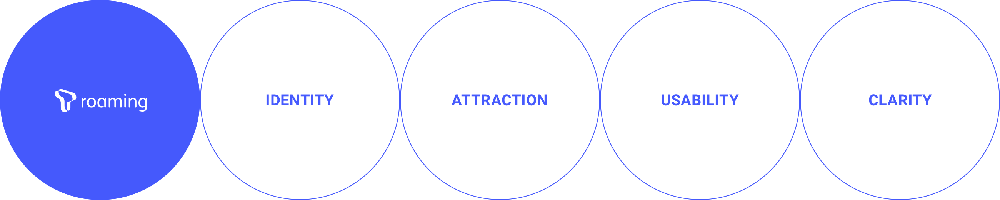
- CONCEPT
-
My Trip, Roaming Advisor
날짜와 목적지만 입력하세요. 더 복잡할 이유가 있나요?
항공, 숙박과 같은 익숙한 사용 패턴으로 나에게 맞는 로밍 요금제를
빠르고 쉽게 찾을 수 있게 합니다.
- 로밍모드 메인
- 로밍 상황에 맞춘 전용 화면
-
기존 서비스와의 두드러지는 차이 중 하나는 로밍 모드 기능의 개선입니다.
국내/해외 상황 구분 없이 항상 동일한 메인 화면을 노출하였던 전 서비스와 달리, 해외에서 서비스 진입 시 고객의 현 상황과 맥락에 따라 바로 요금제
사용량을 조회하고 변경할 수 있도록 새롭게 T로밍 모드 기능을 구축하였습니다.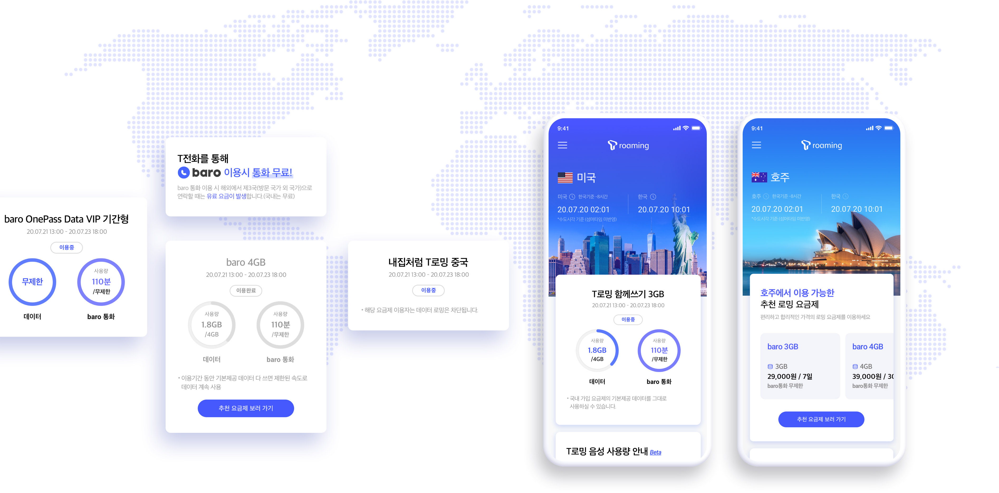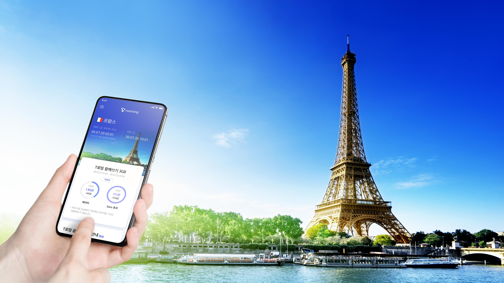
- 새로운 로밍 서비스
- 자주 쓰지 않아도 익숙하게, 여행의 감성이 충만하도록
-
T로밍 사용자의 여정과 플로우에 있어 예약과 로밍에관한 일관성있으며 기본을 잃지않는 충실한 기능을 제공하도록 개선하였습니다.
사용자의 현 상황과 맥락에 1인칭 시점에서 마치 여행중이라는 사실을 체감할 수 있음과 동시에 각각의 상황들에 최적화되어있는 디자인을
제공하고있습니다.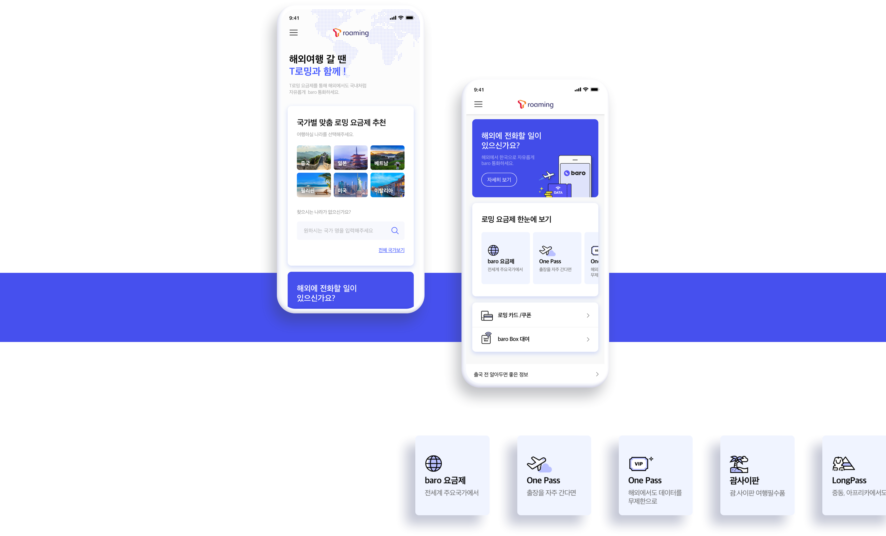
- 요금제 추천
- 여행의, 여행에 의한, 여행을 위한
-
사업자 관점의 나열식 요금제 리스트로 인해 요금제별로 상세페이지를 반복 탐색해야하는 기존 서비스를, 여행을 앞둔 고객의 입장에서 항공/숙박 등의
일반적인 여행 준비와 동일한 맥락으로 개선하였습니다.
방문 국가와 여행 기간만 선택하면 쉽고 빠르게 고객의 요구에 부합하는 최적의 요금제를 제안 받고 선택할 수 있게 만들었습니다.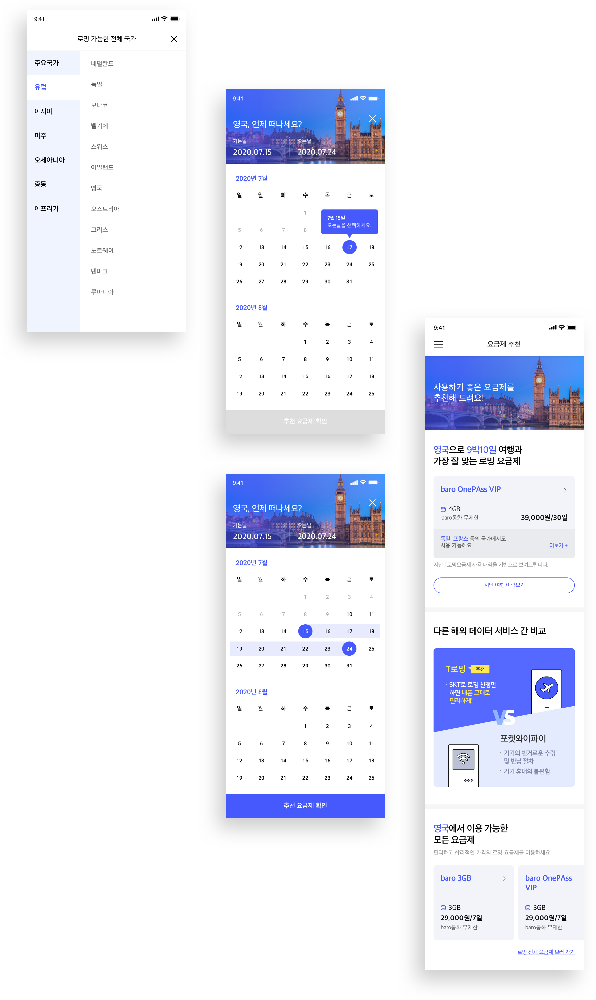
- 여행 패턴에 따른 상품 정보 제공
-
같은 곳을 방문할 때도 필요한 통신 서비스는 모두 개인별로 다릅니다.
여행 패턴을 우선 선택하는 방식으로도 본인의 스타일에 맞는 요금제를 쉽게 찾아 이용할 수 있습니다.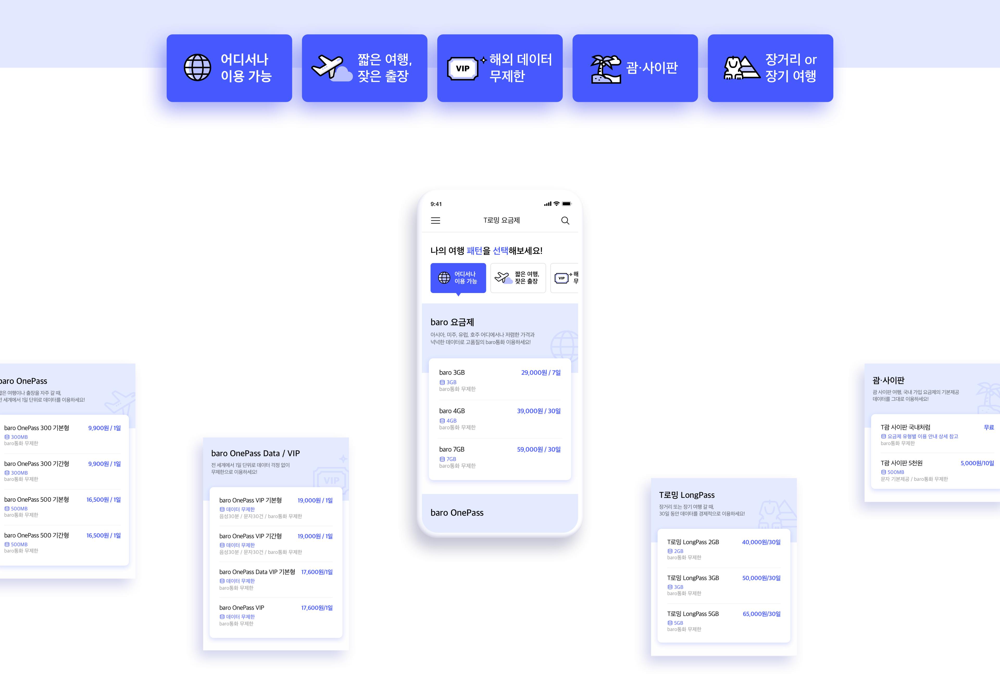
- 나의 로밍 데이터 사용 패턴
-
고객의 개인적인 여행 패턴(여행지, 기간, 과거여행이력 등)을 고려하여 개인화된 요금제 추천을 적용해 추천 요금제에 대한 신뢰도를 높였습니다.
지난 여행 정보(여행 내역)를 제공합니다. 지난 여행의 평균 요금 사용량을 확인해 보고, 다가오는 여행에 맞는 요금제를 선택해 보세요.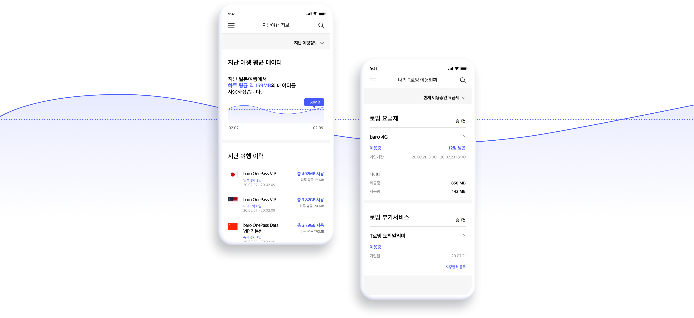
- 고객 사용 맥락에 맞게 제공되는 콘텐츠
-
부가 서비스, baro Box, 로밍 카드 쿠폰 등 로밍 요금제 외 다른 로밍 상품 서비스도 고객이 가입하고 이용하기 쉽게, 사용 맥락에 따라 콘텐츠 흐름을 재배치하고 영역별로 분리하여 정리하였습니다. 또한, 로밍 사용 이력 및 요금제 가입 여부에 따라 안내 문구, 로밍 정보, 요금제 추천 등의 콘텐츠를 제공하여 사용자 유형별 맞춤 안내 서비스를 제공합니다.
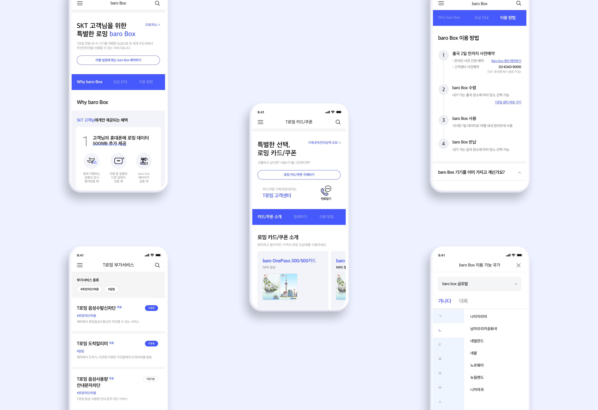
- 로밍안내 메인
-
해외 로밍 중인 상황에서 도움이 되는 정보와 서비스를 쉽게 접근하고 활용할 수 있도록 구성되었습니다.
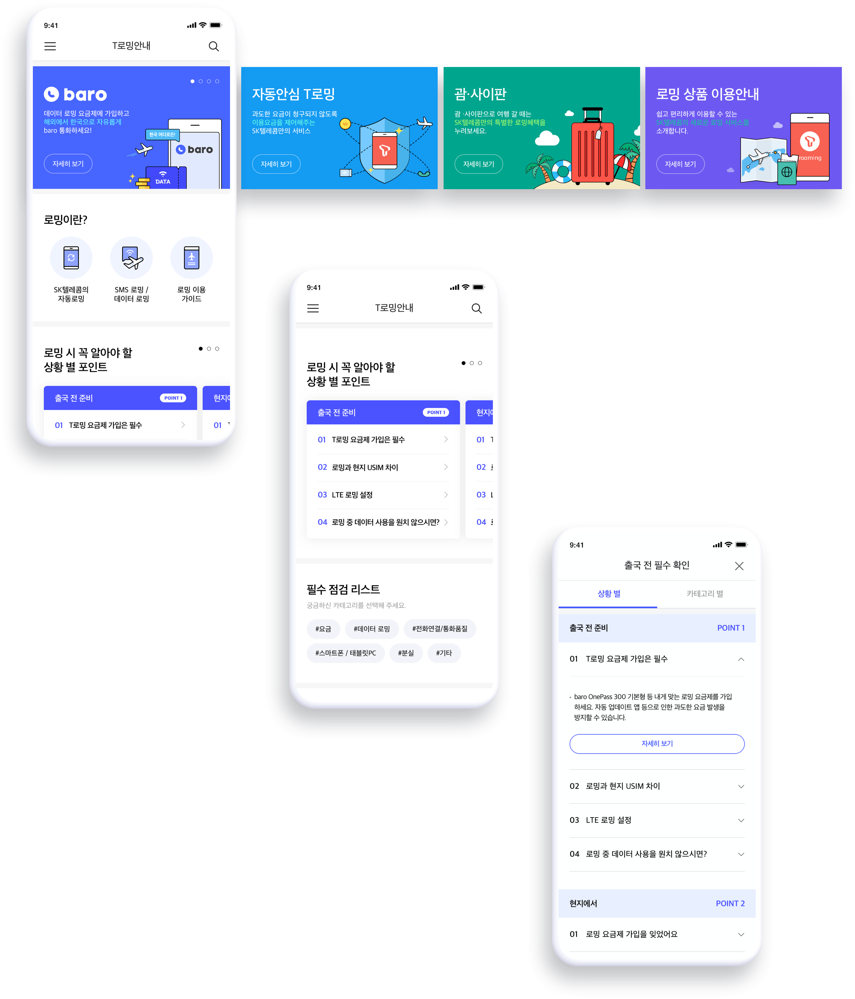
- 로밍안내 상세
-
baro통화, 자동안심 T로밍, 괌사이판 안내
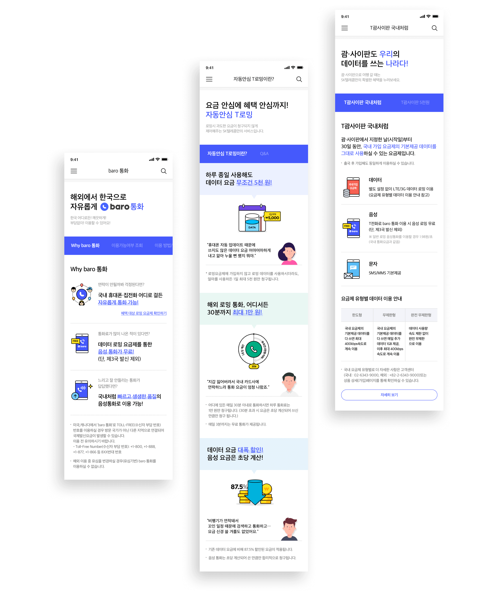
- 짧은 여행, 긴 여운
-
T로밍 사용자의 여정과 플로우에 있어 예약과 로밍에관한 일관성있으며 기본을 잃지않는 충실한 기능을 제공하도록 개선하였습니다.
사용자의 현 상황과 맥락에 1인칭 시점에서 마치 여행중이라는 사실을 체감할 수 있음과 동시에 각각의 상황들에 최적화되어있는 디자인을
제공하고있습니다.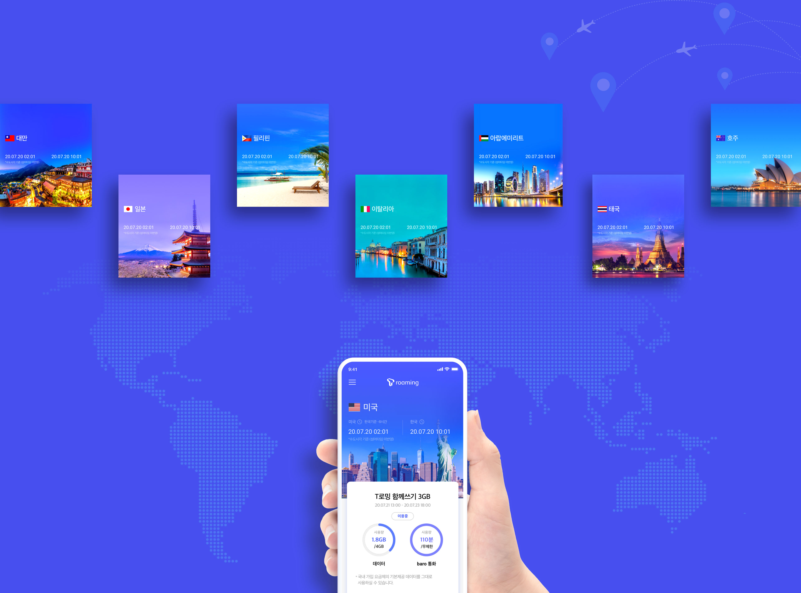
- Icon&Illust
- 아이콘 디자인 프로세스
-
T로밍의 아이콘은 크게 최소한의 형태로 축소되어 필수적인 특징으로 단순화시킨 시스템아이콘과 그래픽 요소로 활용가능한 비주얼 아이콘으로
구분됩니다. 각각의 아이콘은 일관된 규칙과 동일한 시각적 무게감으로 통일성을 유지하였습니다.
- Color
- ‘여행이 색다른 경험이 될 수 있도록’ T로밍만의 컬러조합
-
신뢰감과 기대감을 주는 Prussian Blue컬러를 기반으로 기존의 T월드의 아이덴티티를 담고있는 레드컬러를 조합한 Ultra Violet으로 컬러시스템을
구축했으며 각 컬러들의 모바일에 최적화된 컬러를 추출해 T로밍만의 메인컬러를 표현하였습니다.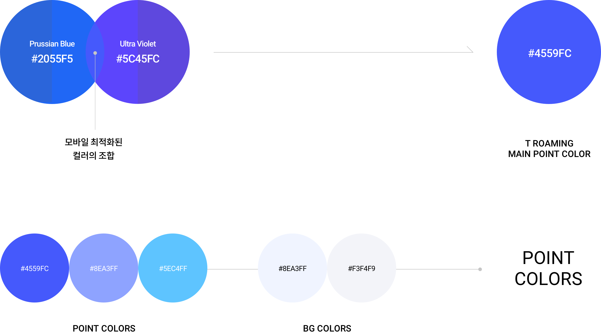
- Font
-


- ‘같지만, 또 다른’ 디자인 시스템
-
기존의 T월드와의 이질감을 최소화 시키기 위해, 가능한 공통적인 사용 경험을 유지하되 서비스 목표에 부합하는 부분적인 변화에는 망설이지
않았습니다. 다른 것 같지만 익숙하고, 늘 쓰던 서비스이지만 새롭게 느껴지는 경험. 반복적인 최적화 작업 통해서 마무리 되었습니다.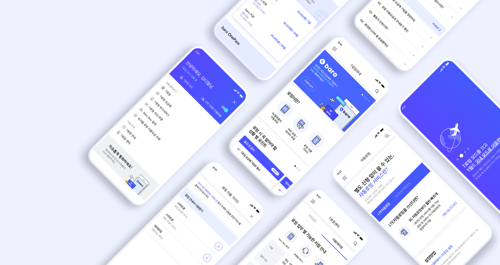
Credits
-
Project Manager
lee gihyu
-
UX Designer
Lee Chan, kim seungsu
-
UX Consultant
kim inyoung, Kim YaeYoung, chung hyejin